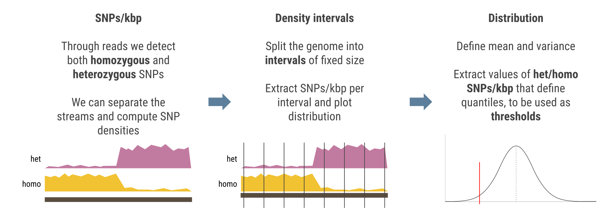

Modelling SNP density
How to do it
A crucial aspect of using JLOH is modelling SNP density. This is done with jloh stats, which profiles the density of heterozygous and homozygous SNPs over the genome in windows of adjustable size (--window-size and --step-size). This step is aimed at choosing an appropriate SNP density threshold to infer LOH blocks when running jloh extract.
To infer the density distribution of the SNPs over the genome, one must run:
jloh stats --vcf my_variants.vcf
This step will produce an output that looks like this:
-- SNPs/Kbp Statistics --
S Gen Het Homo
Mean 1.46 1.46 0.53
Max 2.76 2.76 1.2
Min 0.04 0.04 0.04
-- SNPs/Kbp Quantiles --
Q Gen Het Homo
0% 0.04 0.04 0.04
5% 0.06 0.06 0.08
10% 0.08 0.08 0.2
15% 0.24 0.24 0.24
20% 0.46 0.46 0.32
25% 0.92 0.92 0.32
30% 1.29 1.29 0.36
35% 1.39 1.39 0.4
40% 1.54 1.54 0.44
45% 1.68 1.68 0.48
50% 1.74 1.74 0.52
55% 1.84 1.84 0.56
60% 1.9 1.9 0.64
65% 1.96 1.96 0.64
70% 2.04 2.04 0.68
75% 2.08 2.08 0.72
80% 2.2 2.2 0.8
85% 2.33 2.33 0.88
90% 2.6 2.6 1.0
95% 2.76 2.76 1.2
The user must choose a Het and a Homo value from a quantile (e.g. Q10) or from a descriptor (e.g. mean). The values will be used as thresholds to separate blocks into candidate LOH blocks and not when running jloh extract. The two chosen values (e.g. 0.08 and 0.2, corresponding to Q10) will become the arguments of the --min-snps-kbp parameter of jloh extract (see below).
Note
Higher quantiles increase the stringency for a block to be retained, but also increase the false negatives in the results.
Tip
This step tells you how heterozygous and how homozygous your dataset is. Depending on that, you may choose the quantiles appropriately to minimize false positives.
Explanation
A quantile cuts a distribution in two. For example, “quantile 10” means that 10% of the items in the distribution have a value that is lower or equal to the one described by Q10.
If we’re talking about SNP densities, a Q10 = 5 means that 10% of the windows in the analysed genome have less than 5 SNPs/kbp.
In a genomic scenario, we can expect the majority of the genome to float around a certain average het/homo SNPs/kbp value. Then, there will be regions of very low heterozygosity (candidate LOH blocks), and regions of high homozygosity (candidate LOH blocks with an alternative allele). These are the ones we want to select for.
This is why jloh stats shows the mean of the distribution together with the quantiles. The easiest approach is to take the mean as threshold: any window that has less than that many SNPs/kbp will be a candidate LOH block.
However, for greater precision, one can choose to use a quantile (Q15, Q10, Q5). these will be lower than the average and still include 15%, 10%, or 5% of the total windows of the genome.